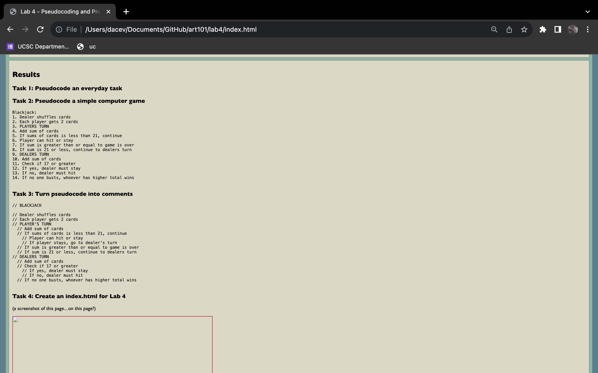

Lab 4 - Pseudocoding and Problem-solving
Challenge
This lab was all about getting used to writing psuedocode. Essentially, pseudocode is code, but written out in plain English. It is very helpful for planning before writing code, especially since it looks like we'll be using javascript soon. This exercise will definitely help build that habit.
Problems
No problemo :)
Reflection
Assignent went well. As a experienced programmer, I felt myself getting a little bit too specific at times. Almost as if I wanted to start writing the code already. But it is a really good way to make a plan before you start coding. It gives you a little guide to help keep you on track.
Results
Task 1: Pseudocode an everyday task
1. Making an egg sandwich 2. Turn on stove 3. Put pan on stove 4. Add butter or oil to pan 5. Add as many eggs to pan 6. Flip eggs if desire 7. Toast bread (two slices) 8. Place egg on one slice of bread 9. Place the other slice of bread on top 10. Eat
Task 2: Pseudocode a simple computer game
Blackjack: 1. Dealer shuffles cards 2. Each player gets 2 cards 3. PLAYERS TURN 4. Add sum of cards 5. If sums of cards is less than 21, continue 6. Player can hit or stay 7. If sum is greater than or equal to game is over 8. If sum is 21 or less, continue to dealers turn 9. DEALERS TURN 10. Add sum of cards 11. Check if 17 or greater 12. If yes, dealer must stay 13. If no, dealer must hit 14. If no one busts, whoever has higher total wins
Task 3: Turn pseudocode into comments
// BLACKJACK
// Dealer shuffles cards
// Each player gets 2 cards
// PLAYER'S TURN
// Add sum of cards
// If sums of cards is less than 21, continue
// Player can hit or stay
// If player stays, go to dealer's turn
// If sum is greater than or equal to game is over
// If sum is 21 or less, continue to dealers turn
// DEALERS TURN
// Add sum of cards
// Check if 17 or greater
// If yes, dealer must stay
// If no, dealer must hit
// If no one busts, whoever has higher total wins
Task 4: Create an index.html for Lab 4
(a screenshot of this page... on this page?)
